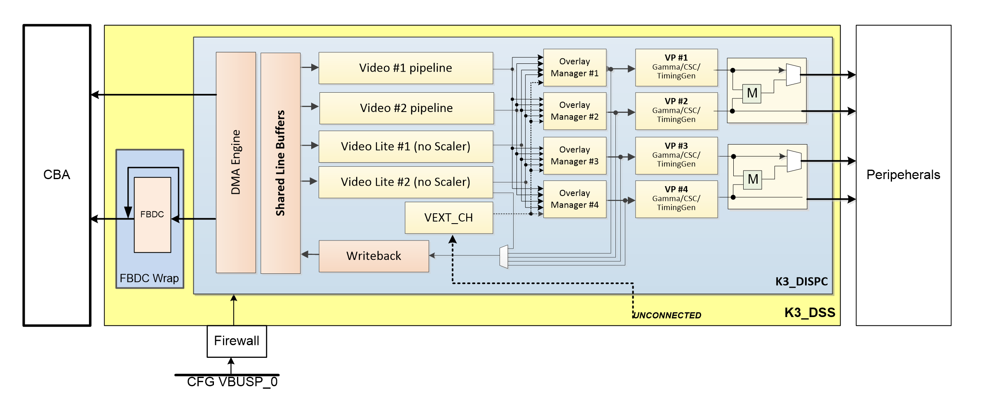

3.2.2.6. DSS¶
3.2.2.6.1. Introduction¶
This page gives a basic description of DSS (Display SubSystem) hardware, the Linux kernel drivers (tidss) and various TI boards that use DSS. The technical reference manual (TRM) for the SoC in question, and the board documentation give more detailed descriptions.
3.2.2.6.2. Supported Devices¶
There are many DSS IP versions, all of which support slightly different set of features. DSS versions up to 5 are supported by the omapdrm driver, and DSS versions 6 and up are supported by the tidss driver. This document covers DSS6 and DSS7, which are used on the following TI SoCs or SoC families: AM65x, AM62x, AM62Ax, J721E, J721S2, J784S4.
3.2.2.6.3. Hardware Architecture¶
The Display Subsystem (DSS) is a hardware block responsible for fetching pixel data from memory and sending it to a display peripheral like an LCD panel or an DisplayPort monitor. DSS hardware can be divided into two major parts:
Display Controller (DISPC), which handles fetching the pixel data, doing color conversions, composition, and other pixel manipulation
Peripherals, which encode the raw pixel data to standard display signals, like MIPI DPI or DP.
In addition to the SoC’s DSS, boards often contain external display bridges (for example, DPI-to-HDMI bridge) and display panels.
The above image gives an overview of the DSS hardware. The arrows show how pipelines are connected to overlay managers, which are further connected to video-ports, which finally create an encoded pixel stream for display on the LCD or monitor.
3.2.2.6.3.1. Display Controller (DISPC)¶
DISPC is the block which is responsible for fetching pixel data from the memory through DMA pipelines, and then create a pixel stream for the peripheral. The pixel stream comprises of a composition of one or more image layers which we finally want to present on the display. DISPC can be split into 3 major sub-blocks:
Pipelines
Overlay Managers (Compositors)
Video Ports (Timing generators)
The next three sub-sections provide details on these sub-blocks.
3.2.2.6.3.1.1. Pipelines¶
Pipelines (or DMA channels) consist of the HW block which performs DMA to fetch image pixels (of different color formats) from RAM. Besides performing DMA, pipelines perform other functions like replication, ARGB expansion, scaling, color conversion, VC1 range mapping on the input pixels before it’s passed on to the overlay manager. An overlay manager receives pixel data from one or more such pipelines, and performs the task of composing them and passing it on to the video-port.
There are two types of pipelines: VIDL and VID. The difference between the two is that VID pipelines support scaling, and VIDL does not. The number of pipelines within DSS varies with the DSS IP version used in the SoC.
3.2.2.6.3.1.2. Overlay Managers (Compositors)¶
Overlay managers are the blocks which take pixel data from one or more pipelines, layer them to form a composition, and create a pixel stream for the video-ports to consume.
The compositor part takes pixel data from multiple pipelines, composing them on the basis of their position with respect to the complete overlay manager size. Tasks like alpha blending, color-keying and z-order are also performed by the compositor in the overlay manager.
3.2.2.6.3.1.3. Video Ports (Timing generators)¶
Video ports take a pixel stream from an overlay manager, and encode it into a standard video signal which is understood by the LCD panel/monitor or an internal peripheral (like eDP). These video standards are specified by MIPI or general video/display bodies.
The timing generator part of the video port is responsible for providing the pixel stream generated by the compositor above according to the timings desired by the peripheral. The timing generator is a state machine which provides RGB data along with control signals like pixel clock, hsync, vsync and data enable. This timing info is used by the panel / peripheral to display the composited frame on the screen.
3.2.2.6.3.2. SoC Hardware Features¶
SoC Family: J721E
DSS version |
Outputs |
Pipes |
Video ports |
|---|---|---|---|
DSS7 |
DPI, DP, DSI |
2 x VIDL, 2 x VID |
4 |
3.2.2.6.4. Driver Architecture¶
The driver for DSS IP is tidss. tidss is a Direct Rendering Manager (DRM) driver, located in the directory drivers/gpu/drm/tidss/ in the kernel tree. tidss does not implement any 3D GPU features, only the Kernel Mode Setting (KMS) features, used to display pixel data on a display.
In addition to tidss, there are a number of bridge and panel drivers located in drivers/gpu/drm/bridge/ and drivers/gpu/drm/panel/ which provide support for various panels and bridges (both external and internal to SoC).
The mapping of DRM entities to DSS hardware is roughly as follows:
DRM term |
HW term |
|---|---|
plane |
DSS pipeline |
crtc |
DSS videoport |
encoder |
Internal and external bridges |
connector |
Connector or a panel |
3.2.2.6.4.1. Driver Features¶
Note: this is not a comprehensive list of features supported/not supported, and new features may be added in every release.
3.2.2.6.4.1.1. Supported Features¶
SoC Outputs
- MIPI DPI
Active matrix
RGB
Note: TI EVMs do not provide the DPI signals through a connector, but instead pass the RGB data through an HDMI/DP transmitters on-board. Custom EVMs based on these SoCs can provide such connectors and can use the Active Matrix LCDs.
- DisplayPort
SST
MIPI DSI
EVM Outputs
- HDMI Output
DPI output from SoC converted to HDMI via HDMI encoders on Starter-Kit (SK) EVMs.
Note: Jacinto CPBs and EVMs do not support DPI to HDMI encoders. It is only available on SK-EVM variants.
- DisplayPort Output
DisplayPort output from SoC directly.
DSI output from SoC converted to DP via DSI-to-DP encoder on board.
DRM Plane Features
CSC
Scaler
Z-order
Global alpha blending
Alpha blending (pre-multipled & non-pre-multiplied)
Input Video Formats (Fourcc codes of supported formats: AR12 AB12 RA12 RG16 BG16 AR15 AB15 AR24 AB24 RA24 BA24 RG24 BG24 AR30 AB30 XR12 XB12 RX12 AR15 AB15 XR24 XB24 RX24 BX24 XR30 XB30 YUYV UYVY NV12)
DRM CRTC Features
Gamma table
3.2.2.6.4.1.2. Unsupported Features/Limitations¶
- DPI output
TDM
BT-656/1120
MIPI DBI/RFBI
Interlace
- DisplayPort
MST
Open LVDS Display Interface (OLDI)
3.2.2.6.5. Driver Configuration¶
3.2.2.6.5.1. Kernel Configuration Options¶
tidss supports building both as built-in or as a module.
tidss can be found under “Device Drivers/Graphics support” in the kernel menuconfig. You need to enable DRM (CONFIG_DRM) before you can enable tidss (CONFIG_DRM_TIDSS).
Enable DSS Display Subsystem support (CONFIG_DRM_TIDSS)
Additional kernel config options may be needed, depending on the SoC and board.
Panels under “Device Drivers/Graphics support/Display Panels”
Bridges under “Device Drivers/Graphics support/Display Interface Bridges”
PHYs under “Device Drivers/PHY Subsystem”
3.2.2.6.5.2. Device Tree Node¶
Documentation for tidss device tree node and its properties can be found in linux kernel device tree bindings in below directory
Documentation/devicetree/bindings/display/ti/. Seperate binding files are present for different version of the DSS controller.
3.2.2.6.6. Driver Usage¶
3.2.2.6.6.1. Loading tidss¶
If built as a module, you need to load all the drm, tidss, bridge and panel modules before tidss will start. When tidss starts, it will prints something along these lines:
[ 9.207746] [drm] Initialized tidss 1.0.0 20180215 for 4a00000.dss on minor 0
3.2.2.6.6.2. Using tidss¶
tidss is usually used by the windowing system like X server or Weston, so normally users don’t need to use tidss directly.
tidss device appears under /dev/dri/ directory, normally card0.
There is also so called DRM render device node, renderD128, which point to the same tidss device. Only buffer allocations can be done via the render node. The render node can be given more relaxed access restrictions, as the applications can only do buffer allocations from there, and cannot affect the system (except by allocating all the memory).
Low level userspace applications can use tidss via DRM ioctls. This is made a bit easier with libdrm, which is a wrapper library around DRM ioctls, or kms++ which is a C++11 library, or by Python bindings provided by kms++.
libdrm is included in TI releases and its sources can be found from:
https://gitlab.freedesktop.org/mesa/drm
libdrm also contains ‘modetest’ tool, which can be used to get basic information about DRM state, and to show a test pattern on a display. Refer to the section Testing tidss properties with modetest below for some examples.
Another option is kms++, a C++11 library for kernel mode setting which includes a bunch of test utilities and also V4L2 classes and Python bindings for DRM and V4L2. Some kms++ tools are included in TI releases. kms++ can be found from:
https://github.com/tomba/kmsxx
3.2.2.6.6.3. Testing tidss¶
kmstest from kms++ is a good tool for testing tidss features. Note that any other applications using DRM (Weston, X) must be killed first. Another tool from kms++ is kmsprint, which can be used to print various bits of information about tidss.
# kmsprint
Connector 0 (39) DP-1 (connected)
Encoder 0 (38) NONE
Crtc 0 (37) 1920x1080 148.500 1920/88/44/148 1080/4/5/36 60 (60.00)
Plane 0 (31) fb-id: 62 (crtcs: 0 1) 0,0 1920x1080 -> 0,0 1920x1080 (AR12 AB12 RA12 RG16 BG16 AR15 AB15 AR24 AB24 RA24 BA24 RG24 BG24 AR30 AB30 XR12 XB12 RX12 AR15 AB15 XR24 XB24 RX24 BX24 XR30 XB30 YUYV UYVY NV12)
FB 62 1920x1080
Connector 1 (48) HDMI-A-1 (disconnected)
Encoder 1 (47) NONE
# kmstest -c dp -r 640x480
Connector 0/@39: DP-1
Crtc 0/@37: 640x480 25.175 640/16/96/48/- 480/10/2/33/- 60 (59.94) 0xa 0x40
Plane 0/@31: 0,0-640x480
Fb 63 640x480-XR24
press enter to exit
3.2.2.6.6.4. tidss properties¶
tidss supports configuration via DRM properties. These are standard DRM properties, and DRM documentation describes them. Also, kmsprint can be used to show the supported properties.
Property |
Object |
Description |
|---|---|---|
zpos |
plane |
Z position of a plane |
COLOR_ENCODING |
plane |
Selects between BT.601 and BT.709 YCbCr color encoding |
COLOR_RANGE |
plane |
Selects between full range and limited range YCbCr encoding |
alpha |
plane |
Full plane alpha-blending |
CTM |
crtc |
Color Transformation Matrix blob property. Implemented trough Color phase rotation matrix in DSS IP. |
GAMMA_LUT |
crtc |
Blob property to set the gamma lookup table (LUT) mapping pixel data sent to the connector. |
GAMMA_LUT_SIZE |
crtc |
Number of elements in gammma lookup table. |
3.2.2.6.6.4.1. Testing tidss properties with modetest¶
As the name suggests, modetest is DRM based mode setting test program available along with libdrm.
It is an easy-to-use tool to test different features provided by display HWs. The DRM driver for,
the display HWs, exposes these features as DRM properties, (see the table above), and the modetest
utility uses these properties to configure the display HW.
modetest outputs look different based on the number and types of displays connected, but the
format remains the same. Before looking at this particular modetest output, kmsprint
output is provided as reference.
$ kmsprint
Connector 0 (40) LVDS-1 (connected)
Encoder 0 (39) LVDS
Crtc 0 (38) 1920x1200@60.00 150.275 1920/32/52/24/? 1200/24/8/3/? 60 (60.00) 0x0 0x48
Plane 0 (31) fb-id: 51 (crtcs: 0 1) 0,0 1920x1200 -> 0,0 1920x1200 (AR12 AB12 RA12 RG16 BG16 AR15 AB15 AR24 AB24 RA24 BA24 RG24 BG24 AR30 AB30 XR12 XB12 RX12 XR15 XB15 XR24 XB24 RX24 BX24 XR30 XB30 YUYV UYVY NV12)
FB 51 1920x1200
Connector 1 (50) HDMI-A-1 (disconnected)
Encoder 1 (49) NONE
In the example below, AM625 SK-EVM has been used, but this could extrapolated to all the EVMs running TI SoCs that support DSS7 / DSS7-L. An OLDI display is being run on the AM625 SK-EVM, while the HDMI is disconnected.
Now, a shortened version of the command: modetest -M tidss that highlights some information used
in the examples later.
$ modetest -M tidss
Encoders:
id crtc type possible crtcs possible clones
39 38 LVDS 0x00000001 0x00000001
49 0 none 0x00000002 0x00000002
Connectors:
id encoder status name size (mm) modes encoders
40 39 connected LVDS-1 217x136 1 39
modes:
index name refresh (Hz) hdisp hss hse htot vdisp vss vse vtot
#0 1920x1200 60.00 1920 1952 2004 2028 1200 1224 1232 1235 150275 flags: ; type: preferred, driver
props:
[ ... ]
50 0 disconnected HDMI-A-1 0x0 0 49
props:
[ ... ]
CRTCs:
id fb pos size
38 51 (0,0) (1920x1200)
#0 1920x1200 60.00 1920 1952 2004 2028 1200 1224 1232 1235 150275 flags: ; type: preferred, driver
props:
[ ... ]
48 0 (0,0) (0x0)
#0 nan 0 0 0 0 0 0 0 0 0 flags: ; type:
props:
[ ... ]
Planes:
id crtc fb CRTC x,y x,y gamma size possible crtcs
31 38 51 0,0 0,0 0 0x00000003
formats: AR12 AB12 RA12 RG16 BG16 AR15 AB15 AR24 AB24 RA24 BA24 RG24 BG24 AR30 AB30 XR12 XB12 RX12 XR15 XB15 XR24 XB24 RX24 BX24 XR30 XB30 YUYV UYVY NV12
props:
[ ... ]
41 0 0 0,0 0,0 0 0x00000003
formats: AR12 AB12 RA12 RG16 BG16 AR15 AB15 AR24 AB24 RA24 BA24 RG24 BG24 AR30 AB30 XR12 XB12 RX12 XR15 XB15 XR24 XB24 RX24 BX24 XR30 XB30 YUYV UYVY NV12
props:
[ ... ]
From the information above, it can be inferred that the LVDS display ouput has these objects associated with it.
Plane with ID = 31.
CRTC with ID = 38.
Encoder with ID = 39.
Connector with ID = 40.
Note that the plane 31 is the primary plane for CRTC 38 (LVDS Display). And for the HDMI display, the associated objects are as follows.
Encoder with ID = 49.
Connector with ID = 50.
Since HDMI display is disconnected at the moment, no CRTC object has been enumerated for it, and hence plane 41 remains unused.
Z order
Z position of the plane when multiple planes are being displayed.
This property is enumerated as zpos in the modetest output. This property can be used with the
-w option of modetest. However, this property is not useful without plane overlaying, as it
won’t show use any discernible change on the display. Hence, refer the example given in the next
section.
Plane Overlaying
Use unused planes as overlay planes.
Based on the version, the DSS controller can have 2 to 4 video pipelines, which get enumerated as DRM planes. If the number of displays connected is less than the number of video pipes in the DSS controller, the extra pipes can be used as overlay planes.
In this example, plane 41 remains an unused plane, while plane 31 acts as a primary plane for CRTC 38. To use plane 41 as an overlay on top of plane 31, the following command can be used.
$ modetest -M tidss -s 40@38:1920x1200 -P 41@38:1280x720 -w 41:zpos:1
setting mode 1920x1200-60.00Hz on connectors 40, crtc 38
testing 1280x720@XR24 overlay plane 41
In this example, we use the primary plane via its connector and crtc using the -s option.
-s 40@38:1920x1200 renders vertical color bars on the LVDS display. Adding the -P option,
-P 41@38:1280x720, renders another frame of color bars (diagonal in this case) of resolution
1280x720. The -w 41:zpos:1 ensures that the plane 41 is displayed on top of plane 31 (or else,
if plane 31 is on top, then plane 41 will be underneath and hence won’t show up on the display).
Global Alpha Blending
Full plane alpha-blending
When displaying multiple planes on top of one another, we can assign transparency levels to each of
the planes using the alpha property. For tidss, the value of this property ranges from 0 with
complete transparency to 65535 with complete opacity.
$ modetest -M tidss -s 40@38:1920x1200 -P 41@38:1280x720 -w 41:zpos:0 -w 31:zpos:1 -w 31:alpha:10000
setting mode 1920x1200-60.00Hz on connectors 40, crtc 38
testing 1280x720@XR24 overlay plane 41
In this example, we are displaying the overlay plane (41) behind the primary plane (31) by
manipulating the zpos property. Since the overlay plane is of a smaller resolution (1280x720)
and the primary plane is of resolution 1920x1200, the overlay plane is expected to not be seen.
However, with the introduction of the alpha property on the primary plane that doesn’t happen. With
alpha = 10000 (out of 65535), faint vertical color bars can be seen on the display, along with
diagonal color bars as solid.
Scaling
Scale the frame smaller or larger.
This feature will only work for plane IDs that map to the VID pipeline of tidss (and not the VIDL pipe). Follow this simple rule of thumb to find out if a particular DRM plane is VID or not. DSS-7 has 4 pipelines in total, while DSS7-L has 2 pipelines. The VIDL pipelines get enumerated as DRM planes first, and then the VID pipes do. Therefore
For DSS7 with 4 pipelines and DRM plane IDs 31, 41, 51, and 58, the DRM planes 51 and 58 are VID pipelines and thus have scaling support.
For DSS7-L with 2 pipelines and DRM plane IDs 31, and 41, the DRM plane 41 is the VID pipeline and thus have scaling support.
The following example was run on DSS7-L and hence the pipe with scaling capability is DRM plane 41.
$ modetest -M tidss -s 40@38:1920x1200@AR24 -P 41@38:400x400*2
setting mode 1920x1200-60.00Hz on connectors 40, crtc 38
testing 400x400@XR24 overlay plane 41
Note that the *2 at the end of -P 41@38:400x400*2 is the scaling factor.
3.2.2.6.6.5. Buffers¶
The buffers used for tidss can be either allocated from tidss or imported from some other driver (dmabuf import). All buffers must be contiguous.
tidss supports generic DRM dumb buffers. Dumb buffers are allocated using the generic DRM_IOCTL_MODE_CREATE_DUMB ioctl.
3.2.2.6.6.6. fbdev emulation (/dev/fb0)¶
DRM framework supports “emulating” the legacy fbdev API. This feature can be enabled or disabled in the kernel config (CONFIG_DRM_FBDEV_EMULATION). The fbdev emulation offers only basic feature set and the fb is shown on the first display. Fbdev emulation is mainly intended for kernel console or boot splash screens.